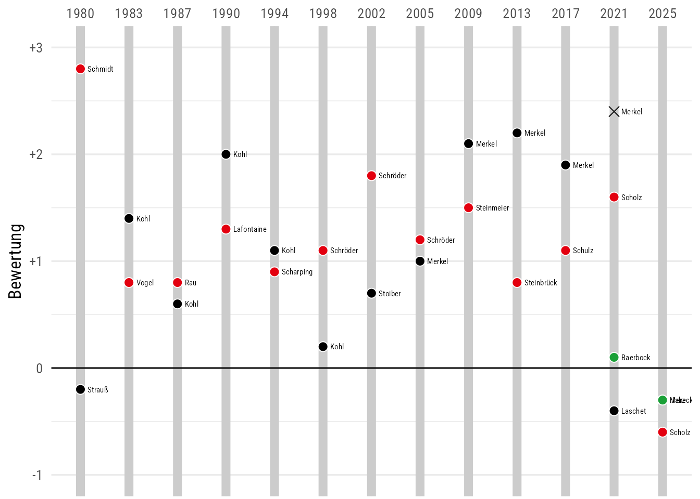
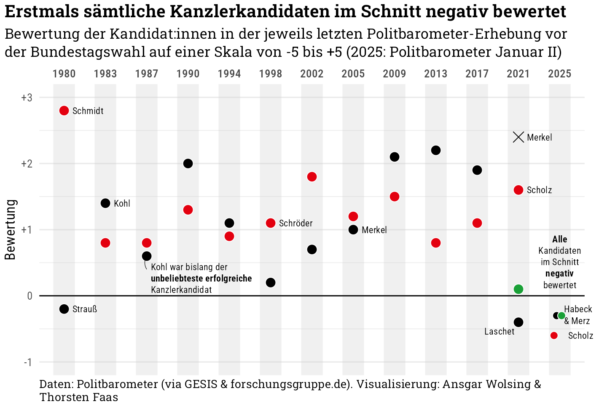

Code
library(tidyverse)
library(ggtext)
library(here)
knitr::opts_chunk$set(dev = "ragg_png")
source(here("R", "custom-theme.R"))
theme_set(theme_custom())library(tidyverse)
library(ggtext)
library(here)
knitr::opts_chunk$set(dev = "ragg_png")
source(here("R", "custom-theme.R"))
theme_set(theme_custom())Aufbereitung der Daten in 05-poba-kandidaten.R
df_skalo <- read_tsv(here("data", "politbarometer-kandidaten.tsv"))df_skalo |>
mutate(wahl = factor(wahl)) |>
ggplot(aes(wahl, bewertung, fill = partei)) +
geom_vline(
aes(xintercept = wahl),
linewidth = 3, color = "grey80") +
geom_hline(aes(yintercept = 0), linewidth = 0.5) +
geom_point(
aes(
shape = ifelse(kandidat == "Merkel" & wahl == "2021", 4, 21),
col = ifelse(kandidat == "Merkel" & wahl == "2021", "black", "white")),
size = 3) +
geom_text(
aes(label = kandidat),
family = "Roboto Condensed", size = 2, hjust = 0, nudge_x = 0.15
) +
scale_x_discrete(position = "top") +
scale_y_continuous(labels = scales::label_number(style_positive = "plus")) +
scale_fill_manual(values = party_pal) +
scale_shape_identity() +
scale_color_identity() +
coord_cartesian(ylim = c(-1, 3)) +
guides(fill = "none") +
labs(
x = NULL, y = "Bewertung"
)
df_skalo |>
mutate(wahl_fct = factor(wahl)) |>
# select(-quelle) |>
# nest(data = c(-wahl)) |>
# mutate(wahl_id = row_number()) |>
# mutate(
# border_xmin = wahl - (wahl - lag(wahl, default = 1976)) / 2,
# border_xmax = wahl + (lead(wahl, default = 2029) - wahl) / 2
# ) |>
# unnest(cols = data) |>
ggplot(aes(wahl_fct, bewertung, fill = partei)) +
# geom_rect(
# data = ~filter(., wahl_id %% 2 == 0),
# aes(xmin = border_xmin, xmax = border_xmax,
# ymin = -Inf, ymax = Inf
# ), fill = alpha("grey85", 0.2)
# ) +
geom_vline(
aes(xintercept = wahl_fct),
linewidth = 9, color = alpha("grey80", 0.3)) +
geom_hline(aes(yintercept = 0), linewidth = 0.5) +
geom_point(
data = ~filter(., wahl < 2025),
aes(
shape = ifelse(kandidat == "Merkel" & wahl == "2021", 4, 21),
col = ifelse(kandidat == "Merkel" & wahl == "2021", "black", "white")),
size = 4) +
geom_point(
data = ~filter(., wahl == 2025),
shape = 21, col = "white",
size = 3, position = position_jitter(height = 0, width = 0.3, seed = 1)) +
geom_text(
data = ~filter(.,
wahl %in% c(2005, 2021) & kandidat == "Merkel" |
wahl == 1980 |
wahl == 1983 & kandidat == "Kohl" |
wahl == 1998 & kandidat == "Schröder" |
kandidat == "Scholz"
),
aes(label = kandidat),
family = "Roboto Condensed", size = 3, hjust = 0, nudge_x = 0.2
) +
annotate(
"richtext",
x = c("1987", "2021", "2025", "2025"),
y = c(0.55, -0.55, 0.5, -0.3),
label = c(
"Kohl war bislang der<br>**unbeliebteste erfolgreiche**<br>Kanzlerkandidat",
"Laschet",
"**Alle**<br>Kandidaten<br>im Schnitt<br>**negativ**<br>bewertet",
"Habeck<br>& Merz"),
vjust = c(1, 0.5, 0.5, 0.5),
hjust = c(0, 1, 0.5, 0),
fill = NA, label.size = 0, family = "Roboto Condensed", size = 3
) +
annotate(
GeomCurve,
x = c("1987"),
xend = c("1987"),
y = c(0.4),
yend = c(0.6),
curvature = -0.3, linewidth = 0.2
) +
scale_x_discrete(position = "top") +
scale_y_continuous(labels = scales::label_number(style_positive = "plus")) +
scale_fill_manual(values = party_pal) +
scale_shape_identity() +
scale_color_identity() +
coord_cartesian(ylim = c(-1, 3), clip = "off") +
guides(fill = "none") +
labs(
title = "Erstmals sämtliche Kanzlerkandidaten im Schnitt negativ bewertet",
subtitle = "Bewertung der Kandidat:innen in der jeweils letzten Politbarometer-Erhebung vor der Bundestagswahl auf einer Skala von -5 bis +5 (2025: Politbarometer Januar II)",
caption = "Daten: Politbarometer (via GESIS & forschungsgruppe.de).
Visualisierung: Ansgar Wolsing & Thorsten Faas",
x = NULL, y = "Bewertung"
) +
theme(
panel.grid.major.x = element_blank(),
panel.grid.minor.x = element_blank(),
axis.text.x.top = element_text(family = "Roboto Condensed SemiBold"),
plot.margin = margin(t = 4, r = 20, b = 4, l = 4)
)